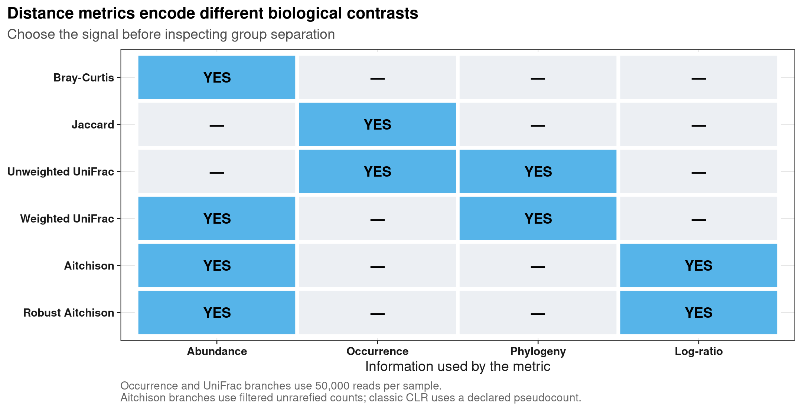
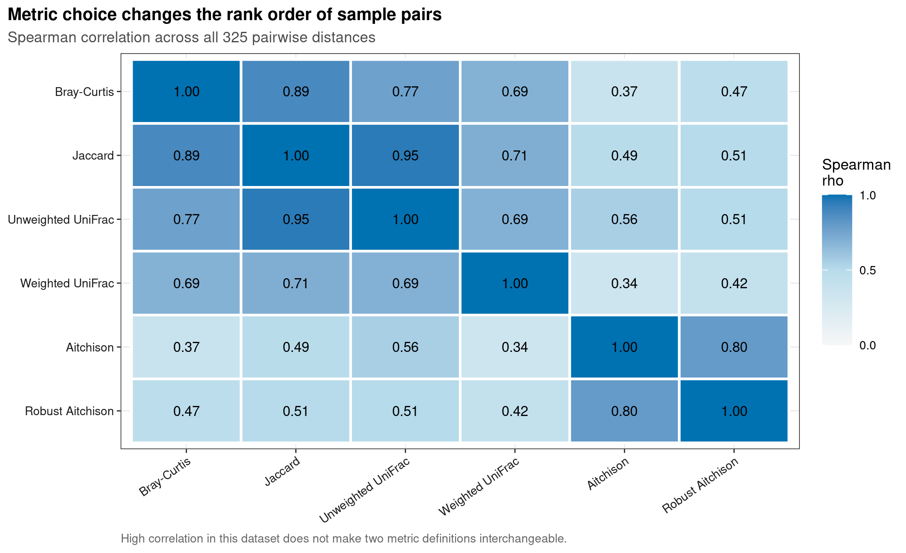
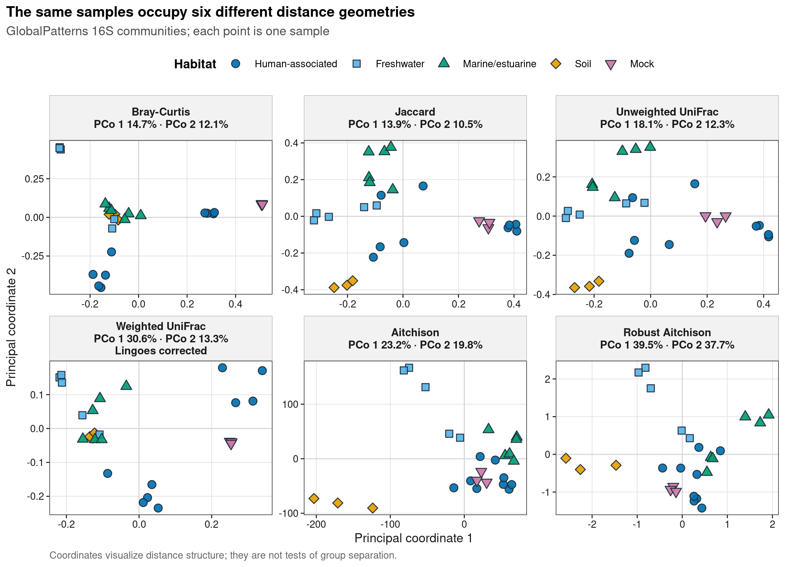
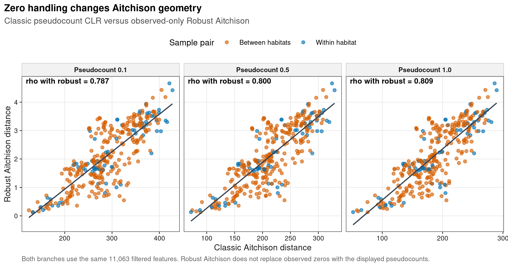

options(timeout = 600)
data_url <- "https://raw.githubusercontent.com/petemeng/microbiome-best-practices/3cb6a817e0c73ab7ecbec1cedc1ad80cbb9ecfaa/"
input_files <- c(
"env/gemelli.yml",
"scripts/run_gemelli_rpca.py",
"data/small/beta-distances/metadata.tsv",
"data/small/beta-distances/otutab.tsv",
"data/small/beta-distances/rooted-tree.nwk.gz",
"data/small/beta-distances/source-summary.json",
"data/small/beta-distances/taxonomy.tsv"
)
for (path in input_files) {
dir.create(dirname(path), recursive = TRUE, showWarnings = FALSE)
if (!file.exists(path)) download.file(paste0(data_url, path), path, mode = "wb", quiet = TRUE)
}Beta 距离度量：Bray/Jaccard/UniFrac/Aitchison/Robust Aitchison（DEICODE）
不同 Beta 距离回答不同问题
微生物组论文中的 PCoA、NMDS、PERMANOVA、CAP 和距离热图，第一步都不是“画坐标”，而是定义样本间距离。常见目标图把每个样本画成一个点，用颜色区分病例、处理或生态环境；然而点的位置首先由距离度量决定。
本例使用 phyloseq 1.48.0 分发的真实 GlobalPatterns 16S 数据。原始研究在不同人体部位、淡水、海洋、沉积物、土壤和 mock community 中进行深度测序，并用系统发育距离展示全球尺度的群落差异。Caporaso et al. (2011)提供数据背景；这里从公开 OTU 表和 rooted tree 重新计算六种距离，绘制原创的距离相关图与六分面 PCoA。
重要先给结论
同一批 26 个样本在六种距离几何中并不占据同样的位置。Jaccard 与 unweighted UniFrac 的 325 个样本对距离秩相关为 0.953，但前者不使用系统发育分支，不能据此称为同一方法；经典 Aitchison 与 Robust Aitchison 的相关为 0.800，说明零值处理会改变样本对的远近次序。weighted UniFrac 的 PCoA 有 3 个小负特征值，负/正特征值绝对和之比为 0.00455，因此只在该分支用 Lingoes 校正作图。
距离应由研究问题预先决定，而不是选“最能把组分开”的一种。需要强调常见类群丰度时，可把 Bray–Curtis 作为候选；关注是否检出时，Jaccard 要配合深度与稀有 feature 稳定性检查；关注相对比例时，log-ratio 距离需要清楚处理零值；问题涉及谱系替代时，才有理由引入 UniFrac。这里比较的是样本关系，不进行组间显著性推断。
六种距离不一致并非一定有人算错，它们可能在强调不同的生物学变化。尤其 Robust Aitchison 虽不机械填入伪计数，仍依赖非零观测和低秩结构；不能据此说它恢复了所有零的真实值。若两种 log-ratio 路线差异主要由低检出 feature 驱动，应先检查稀疏度、过滤和测序深度，再判断是否值得改变主要距离。这个判断不能由一张更漂亮的 PCoA 决定。
下载并读取本次分析的数据
需要 R，以及 ape、digest、dplyr、ggplot2、jsonlite、phyloseq、ragg、readr、svglite、tidyr、vegan。本次使用用于距离比较的 count、taxonomy、metadata 三张表及系统发育树。
在一个新建的文件夹中运行以下代码，下载文件后按文中的顺序继续分析：
Robust Aitchison 还需要 gemelli 的独立 Python 环境。上述文件下载后，在 Linux 或 WSL2 终端执行：
conda env create --prefix ./gemelli-env --file env/gemelli.ymllibrary(ape)
library(digest)
library(dplyr)
library(ggplot2)
library(jsonlite)
library(phyloseq)
library(readr)
library(tidyr)
library(vegan)
set.seed(20260722)
font_pub <- "sans"
pal_pub <- c(
blue = "#0072B2",
orange = "#E69F00",
green = "#009E73",
vermillion = "#D55E00",
purple = "#CC79A7",
sky = "#56B4E9",
yellow = "#F0E442",
grey = "#6B7280"
)
scale_color_pub <- function(..., values = unname(pal_pub)) {
ggplot2::scale_color_manual(..., values = values)
}
scale_fill_pub <- function(..., values = unname(pal_pub)) {
ggplot2::scale_fill_manual(..., values = values)
}
theme_pub <- function(base_size = 10, base_family = font_pub) {
ggplot2::theme_bw(base_size = base_size, base_family = base_family) +
ggplot2::theme(
panel.grid.minor = ggplot2::element_blank(),
panel.grid.major = ggplot2::element_line(
colour = "#E6E6E6", linewidth = 0.25
),
axis.text = ggplot2::element_text(colour = "#1A1A1A"),
axis.title = ggplot2::element_text(colour = "#1A1A1A"),
axis.ticks = ggplot2::element_line(
colour = "#1A1A1A", linewidth = 0.3
),
plot.title.position = "plot",
plot.title = ggplot2::element_text(
face = "bold", size = ggplot2::rel(1.15)
),
plot.subtitle = ggplot2::element_text(colour = "#4D4D4D"),
plot.caption = ggplot2::element_text(colour = "#666666", hjust = 0),
strip.background = ggplot2::element_rect(
fill = "#F2F2F2", colour = "#B3B3B3", linewidth = 0.3
),
strip.text = ggplot2::element_text(face = "bold"),
legend.key = ggplot2::element_blank(),
legend.position = "top"
)
}
save_pub <- function(
plot,
file_base,
width = 89,
height = 70,
units = "mm",
dpi = 600,
write_svg = TRUE,
write_tiff = TRUE,
base_family = font_pub
) {
dir.create(dirname(file_base), recursive = TRUE, showWarnings = FALSE)
ggplot2::ggsave(
paste0(file_base, ".pdf"), plot,
width = width, height = height, units = units,
device = grDevices::cairo_pdf, family = base_family, bg = "white"
)
if (isTRUE(write_svg)) {
ggplot2::ggsave(
paste0(file_base, ".svg"), plot,
width = width, height = height, units = units,
device = svglite::svglite, bg = "white"
)
}
ggplot2::ggsave(
paste0(file_base, ".png"), plot,
width = width, height = height, units = units, dpi = dpi,
device = ragg::agg_png, bg = "white"
)
if (isTRUE(write_tiff)) {
ggplot2::ggsave(
paste0(file_base, ".tiff"), plot,
width = width, height = height, units = units, dpi = dpi,
device = ragg::agg_tiff, compression = "lzw", bg = "white"
)
}
invisible(plot)
}从三件套读起，并单独读取根树
otutab 的方向固定为 feature × sample。taxonomy 虽不直接进入距离公式，仍与计数表一起核对，避免分析数据和注释数据来自不同版本。
read_keyed_tsv <- function(path) {
x <- readr::read_tsv(
path,
show_col_types = FALSE,
progress = FALSE,
name_repair = "minimal",
na = character()
)
ids <- as.character(x[[1L]])
stopifnot(!anyDuplicated(ids))
out <- as.data.frame(x[-1L], check.names = FALSE)
rownames(out) <- ids
out
}
input_paths <- c(
otutab = "data/small/beta-distances/otutab.tsv",
taxonomy = "data/small/beta-distances/taxonomy.tsv",
metadata = "data/small/beta-distances/metadata.tsv",
tree = "data/small/beta-distances/rooted-tree.nwk.gz"
)
expected_sha256 <- c(
otutab = "727073a3f26aff6730ad54b55c11e1d52bd5d3d34f99dbf75d125d2e84d9722d",
taxonomy = "1189e6e2a02474a665283f6b9962ec25716b6c7faf66011a6506e87a69ddf0ff",
metadata = "c708b3b89edbb26a4aab26b5e575cdefef1eae28b9b7f93cea5f8f2edfc94221",
tree = "535f512b3018da462a416b8f04ef36369bf1c1e383510494a790508361fc8c15"
)
observed_sha256 <- vapply(
input_paths,
function(path) digest::digest(
path,
algo = "sha256",
serialize = FALSE,
file = TRUE
),
character(1)
)
stopifnot(identical(observed_sha256, expected_sha256))
otutab <- read_keyed_tsv(input_paths[["otutab"]])
taxonomy <- read_keyed_tsv(input_paths[["taxonomy"]])
metadata <- read_keyed_tsv(input_paths[["metadata"]])
tree <- ape::read.tree(gzfile(input_paths[["tree"]]))
otutab <- data.matrix(otutab)
storage.mode(otutab) <- "numeric"
feature_ids <- rownames(otutab)
sample_ids <- colnames(otutab)
stopifnot(
nrow(otutab) == 18988L,
ncol(otutab) == 26L,
sum(otutab) == 28216678,
setequal(feature_ids, rownames(taxonomy)),
setequal(sample_ids, rownames(metadata)),
all(is.finite(otutab)),
all(otutab >= 0),
all(abs(otutab - round(otutab)) < .Machine$double.eps^0.5),
all(rowSums(otutab) > 0),
all(colSums(otutab) > 0)
)
taxonomy <- taxonomy[feature_ids, , drop = FALSE]
metadata <- metadata[sample_ids, , drop = FALSE]
dim(otutab)
sum(otutab)
otutab[1:5, 1:5]
taxonomy[1:5, , drop = FALSE]
head(metadata)[1] 18988 26
[1] 28216678
CL3 CC1 SV1 M31Fcsw M11Fcsw
549322 0 0 0 0 0
522457 0 0 0 0 0
951 0 0 0 0 0
244423 0 0 0 0 0
586076 0 0 0 0 0
Kingdom Phylum Class Order Family Genus
549322 Archaea Crenarchaeota Thermoprotei
522457 Archaea Crenarchaeota Thermoprotei
951 Archaea Crenarchaeota Thermoprotei Sulfolobales Sulfolobaceae Sulfolobus
244423 Archaea Crenarchaeota Sd-NA
586076 Archaea Crenarchaeota Sd-NA
Species
549322
522457
951 Sulfolobusacidocaldarius
244423
586076
SampleType HabitatClass Primer Final_Barcode
CL3 Soil Soil ILBC_01 AACGCA
CC1 Soil Soil ILBC_02 AACTCG
SV1 Soil Soil ILBC_03 AACTGT
M31Fcsw Feces Human-associated ILBC_04 AAGAGA
M11Fcsw Feces Human-associated ILBC_05 AAGCTG
M31Plmr Skin Human-associated ILBC_07 AATCGT
Barcode_truncated_plus_T Barcode_full_length
CL3 TGCGTT CTAGCGTGCGT
CC1 CGAGTT CATCGACGAGT
SV1 ACAGTT GTACGCACAGT
M31Fcsw TCTCTT TCGACATCTCT
M11Fcsw CAGCTT CGACTGCAGCT
M31Plmr ACGATT CGAGTCACGAT
Description
CL3 Calhoun South Carolina Pine soil, pH 4.9
CC1 Cedar Creek Minnesota, grassland, pH 6.1
SV1 Sevilleta new Mexico, desert scrub, pH 8.3
M31Fcsw M3, Day 1, fecal swab, whole body study
M11Fcsw M1, Day 1, fecal swab, whole body study
M31Plmr M3, Day 1, right palm, whole body study下载完整 R 脚本。脚本包含数据下载、计算和图形导出。
首次使用时安装 R 包
install.packages(c(
"BiocManager", "ape", "digest", "dplyr", "ggplot2", "jsonlite",
"ragg", "readr", "scales", "svglite", "systemfonts", "tibble",
"tidyr", "vegan"
))
BiocManager::install(version = "3.19", ask = FALSE)
BiocManager::install("phyloseq", version = "3.19", ask = FALSE)距离不是画图选项，而是测量定义
先用一张表锁定六种度量的解释边界：
| 距离 | 主要信息 | 是否需要树 | 零值处理 | 本例标准化 |
|---|---|---|---|---|
| Bray–Curtis | feature 丰度差异 | 否 | 零可直接存在 | 50,000 reads；另与原始相对丰度核对 |
| binary Jaccard | feature 出现/缺失 | 否 | 零表示未检出 | 50,000 reads |
| unweighted UniFrac | 出现/缺失所在的独有分支长度 | 是 | 零表示该 tip 未检出 | 50,000 reads |
| weighted UniFrac | 分支上的相对丰度差异 | 是 | 零与丰度共同进入 | 50,000 reads |
| Aitchison | CLR 后的 log-ratio 差异 | 否 | 必须声明 zero replacement | 未抽平；过滤后加 0.5 |
| Robust Aitchison | 只在观测非零项上做 rclr，再用 RPCA 补全低秩结构 | 否 | 不给观测零机械加伪计数 | 未抽平；与 Aitchison 同一过滤集 |
Bray–Curtis 与 Jaccard：丰度和出现不是一回事
两个样本 (i,j) 的 Bray–Curtis dissimilarity 可写为：
\[ d_{BC}(i,j)=\frac{\sum_k |x_{ik}-x_{jk}|} {\sum_k(x_{ik}+x_{jk})}. \]
它对共同高丰度 feature 更敏感。binary Jaccard 先把计数变为 0/1，再比较两样本 feature 集合的交集与并集：
\[ d_J(i,j)=1-\frac{|A_i\cap A_j|}{|A_i\cup A_j|}. \]
因此，一个 feature 从 1 read 变为 10,000 reads 不改变 binary Jaccard，却会改变 Bray–Curtis。presence/absence 还很容易受测序深度影响：低深度样本更可能漏检稀有 feature，所以本例把四个生态距离放在同一份 50,000 reads 稀释表上比较。
UniFrac：比较的是树上分支，而不是 taxonomy 字符串
Unweighted UniFrac 根据只出现在某一群落中的系统发育分支长度计算距离；weighted UniFrac 再把分支上的丰度纳入权重。Lozupone & Knight (2005)与Lozupone et al. (2007)分别给出核心方法与定量/定性比较。
这意味着 UniFrac 至少需要三个不可省略的门禁：
- 树已经定根（rooted）；
- 每条边有有限、非负的 branch length；
- 树 tips 与计数表 feature ID 精确对应。
如果 tip 不匹配，不能静默取交集后继续。被删掉的是哪些 ASV、丢失多少 reads、是否偏向某些类群，都必须先形成审计表。
Aitchison：相对信息应在 log-ratio 几何中比较
微生物计数受总测序量约束。对正值组成向量 (x_i)，centered log-ratio（CLR）为：
\[ \operatorname{clr}(x_{ik})= \log x_{ik}-\frac{1}{D}\sum_{l=1}^{D}\log x_{il}, \]
两个样本 CLR 向量的欧氏距离就是 Aitchison distance。问题在于 (log(0)) 不存在。给所有零加 0.5、1 或其他 pseudocount 是一个分析假设，不是无害的格式修复。
深入：Robust Aitchison 与旧 DEICODE 名称的关系
Martino et al. (2019)提出的 DEICODE 方法族，先对每个样本的观测非零项做 robust CLR（rclr），把零当作缺失位置，再用低秩 matrix completion / robust PCA（RPCA）估计样本与 feature 结构。它不是“换了一个固定伪计数的 CLR”。
当前维护实现是 gemelli。本例固定 gemelli 0.0.13、3 个 components、5 次 OptSpace iterations 和显式 ARPACK seed；输出再统一 PC 方向并写到 12 位小数。这里保留“DEICODE”作为读者熟悉的方法族名称，但实际运行使用维护中的 gemelli，而不是旧的 DEICODE 仓库。
PCoA 的负特征值要先审计
PCoA 尝试在欧氏坐标中保存输入距离。如果距离不是严格 Euclidean，分解可能出现负特征值。处理顺序应是：
- 保存全部原始 eigenvalues；
- 报告负特征值数量及其相对量级；
- 只有存在实质性负值时才明确使用 Lingoes 或 Cailliez correction；
- 在图注和 Methods 中写明校正，而不是静默改变距离。
计算生态距离与组成性距离
计算 UniFrac 前核对树、特征与枝长
tree_audit <- data.frame(
Metric = c(
"Rooted",
"Tips",
"Unique tips",
"Internal nodes",
"Branch lengths present",
"Finite branch lengths",
"Negative branch lengths",
"Tip set matches otutab"
),
Value = c(
ape::is.rooted(tree),
length(tree$tip.label),
length(unique(tree$tip.label)),
tree$Nnode,
!is.null(tree$edge.length),
all(is.finite(tree$edge.length)),
sum(tree$edge.length < 0),
setequal(tree$tip.label, feature_ids)
)
)
stopifnot(
ape::is.rooted(tree),
length(tree$tip.label) == 18988L,
!anyDuplicated(tree$tip.label),
!is.null(tree$edge.length),
all(is.finite(tree$edge.length)),
all(tree$edge.length >= 0),
setequal(tree$tip.label, feature_ids)
)
tree_audit Metric Value
1 Rooted 1
2 Tips 18988
3 Unique tips 18988
4 Internal nodes 18987
5 Branch lengths present 1
6 Finite branch lengths 1
7 Negative branch lengths 0
8 Tip set matches otutab 1为生态距离固定同一测序深度
本例所有样本至少有 58,688 reads，因此固定 50,000 reads 可保留 26 个样本。随机抽样只执行一次并固定 seed；这张表只服务于距离比较，不作为 feature-level differential abundance 的通用输入。
community <- t(otutab)
library_size <- rowSums(community)
stopifnot(min(library_size) >= 50000)
set.seed(20260722)
community_rarefied <- vegan::rrarefy(
community,
sample = 50000
)
stopifnot(
nrow(community_rarefied) == 26L,
all(rowSums(community_rarefied) == 50000L),
sum(community_rarefied) == 1300000
)
rarefaction_audit <- data.frame(
SampleID = rownames(community_rarefied),
HabitatClass = metadata[rownames(community_rarefied), "HabitatClass"],
OriginalReads = as.numeric(library_size[rownames(community_rarefied)]),
RarefiedReads = rowSums(community_rarefied),
FeaturesBefore = rowSums(community > 0),
FeaturesAfter = rowSums(community_rarefied > 0)
)
head(rarefaction_audit)
c(
samples = nrow(community_rarefied),
reads = sum(community_rarefied),
retained_features = sum(colSums(community_rarefied) > 0)
) SampleID HabitatClass OriginalReads RarefiedReads FeaturesBefore
CL3 CL3 Soil 864077 50000 6964
CC1 CC1 Soil 1135457 50000 7679
SV1 SV1 Soil 697509 50000 5729
M31Fcsw M31Fcsw Human-associated 1543451 50000 2667
M11Fcsw M11Fcsw Human-associated 2076476 50000 2574
M31Plmr M31Plmr Human-associated 718943 50000 3214
FeaturesAfter
CL3 3256
CC1 3644
SV1 2708
M31Fcsw 714
M11Fcsw 547
M31Plmr 1244
samples reads retained_features
26 1300000 12443 计算 Bray、Jaccard 和两种 UniFrac
bray <- vegan::vegdist(community_rarefied, method = "bray")
jaccard <- vegan::vegdist(
community_rarefied,
method = "jaccard",
binary = TRUE
)
ps_rarefied <- phyloseq::phyloseq(
phyloseq::otu_table(t(community_rarefied), taxa_are_rows = TRUE),
phyloseq::phy_tree(tree)
)
ps_rarefied <- phyloseq::prune_taxa(
phyloseq::taxa_sums(ps_rarefied) > 0,
ps_rarefied
)
unweighted_unifrac <- phyloseq::UniFrac(
ps_rarefied,
weighted = FALSE,
normalized = TRUE,
parallel = FALSE,
fast = TRUE
)
weighted_unifrac <- phyloseq::UniFrac(
ps_rarefied,
weighted = TRUE,
normalized = TRUE,
parallel = FALSE,
fast = TRUE
)
# Bray sensitivity: rarefied counts versus unrarefied relative abundance
bray_relative <- vegan::vegdist(
vegan::decostand(community, method = "total"),
method = "bray"
)
bray_sensitivity_rho <- cor(
as.vector(bray),
as.vector(bray_relative),
method = "spearman"
)
bray_sensitivity_rho[1] 0.9985223本数据中两条 Bray 路线的距离秩相关为 0.999。这是一项数据集特异的敏感性结果，不是“Bray 永远不受标准化影响”的保证。
在未抽平计数上计算经典 Aitchison
为与 gemelli 默认的稀有 feature 控制一致，两个 Aitchison 分支都保留 total count > 10 且 prevalence > 10% 的 feature。阈值是排除极少信息行的分析决策，必须在 Methods 中报告。
feature_total <- rowSums(otutab)
feature_prevalence <- rowMeans(otutab > 0)
keep_composition <- feature_total > 10 & feature_prevalence > 0.10
feature_filter_audit <- data.frame(
FeatureID = feature_ids,
TotalCount = feature_total,
Prevalence = feature_prevalence,
Retained = keep_composition
)
stopifnot(
sum(keep_composition) == 11063L,
sum(otutab[keep_composition, , drop = FALSE]) == 28148221
)
aitchison_distance <- function(pseudocount) {
log_counts <- log(
t(otutab[keep_composition, , drop = FALSE]) + pseudocount
)
clr <- log_counts - rowMeans(log_counts)
dist(clr, method = "euclidean")
}
aitchison_pc01 <- aitchison_distance(0.1)
aitchison_pc05 <- aitchison_distance(0.5)
aitchison_pc10 <- aitchison_distance(1.0)
c(
retained_features = sum(keep_composition),
retained_reads = sum(otutab[keep_composition, , drop = FALSE])
)retained_features retained_reads
11063 28148221 用维护中的 gemelli 计算 Robust Aitchison
下面命令固定 3 个 components、5 次 iterations、同一 feature filter 和 seed。仓库附带的 runner 还固定 ARPACK 初始化、统一任意 PC 符号并把浮点输出规范到 12 位。
gemelli_python <- Sys.getenv(
"GEMELLI_PYTHON",
"gemelli-env/bin/python"
)
gemelli_runner <- Sys.getenv(
"GEMELLI_RUNNER",
"scripts/run_gemelli_rpca.py"
)
stopifnot(file.exists(gemelli_python), file.exists(gemelli_runner))
dir.create("results/21-beta-distances", recursive = TRUE, showWarnings = FALSE)
gemelli_log <- system2(
gemelli_python,
args = c(
shQuote(gemelli_runner),
"--input", shQuote(input_paths[["otutab"]]),
"--output-dir", shQuote("results/21-beta-distances"),
"--n-components", "3",
"--min-sample-count", "500",
"--min-feature-count", "10",
"--min-feature-frequency", "10",
"--max-iterations", "5"
),
stdout = TRUE,
stderr = TRUE,
env = c(
"PYTHONHASHSEED=20260722",
"OMP_NUM_THREADS=1",
"OPENBLAS_NUM_THREADS=1",
"MKL_NUM_THREADS=1"
)
)
gemelli_status <- attr(gemelli_log, "status")
if (is.null(gemelli_status)) gemelli_status <- 0L
stopifnot(gemelli_status == 0L)
gemelli_log[1] "gemelli RPCA complete: 11063 features x 26 samples"展开：runner 的关键 Python 实现
把下面代码保存为 scripts/run_gemelli_rpca.py。它接受 feature × sample TSV，输出距离、样本坐标、feature loadings、eigenvalues 和可由 scikit-bio 读取的 ordination 文件。
#!/usr/bin/env python3
from __future__ import annotations
import argparse
import hashlib
import json
import os
import platform
import sys
from pathlib import Path
import biom
import gemelli
import gemelli.optspace as gemelli_optspace
import numpy as np
import pandas as pd
import scipy
import skbio
import sklearn
from gemelli.rpca import rpca, rpca_table_processing
from scipy.sparse.linalg import svds as scipy_svds
SEED = 20260722
ROUND_DIGITS = 12
def deterministic_svds(*args, **kwargs):
kwargs.setdefault("rng", np.random.default_rng(SEED))
return scipy_svds(*args, **kwargs)
def canonicalize_results(ordination, distance):
samples = ordination.samples.copy().astype(float)
features = ordination.features.copy().astype(float)
for axis in samples.columns:
anchor = samples[axis].abs().idxmax()
if samples.loc[anchor, axis] < 0:
samples.loc[:, axis] *= -1
features.loc[:, axis] *= -1
result = skbio.OrdinationResults(
ordination.short_method_name,
ordination.long_method_name,
ordination.eigvals.astype(float).round(ROUND_DIGITS),
samples=samples.round(ROUND_DIGITS),
features=features.round(ROUND_DIGITS),
proportion_explained=(
ordination.proportion_explained.astype(float).round(ROUND_DIGITS)
),
)
distance = skbio.DistanceMatrix(
np.round(np.asarray(distance.data), ROUND_DIGITS),
ids=distance.ids,
)
return result, distance
parser = argparse.ArgumentParser()
parser.add_argument("--input", type=Path, required=True)
parser.add_argument("--output-dir", type=Path, required=True)
parser.add_argument("--n-components", type=int, default=3)
parser.add_argument("--min-sample-count", type=int, default=500)
parser.add_argument("--min-feature-count", type=int, default=10)
parser.add_argument("--min-feature-frequency", type=float, default=10.0)
parser.add_argument("--max-iterations", type=int, default=5)
args = parser.parse_args()
args.output_dir.mkdir(parents=True, exist_ok=True)
counts_df = pd.read_csv(args.input, sep="\t", index_col=0)
counts = counts_df.to_numpy(dtype=float)
if (
counts_df.index.has_duplicates
or counts_df.columns.has_duplicates
or not np.isfinite(counts).all()
or (counts < 0).any()
or not np.equal(counts, np.floor(counts)).all()
or (counts.sum(axis=0) == 0).any()
or (counts.sum(axis=1) == 0).any()
):
raise ValueError("Invalid feature table")
table = biom.Table(
counts,
observation_ids=counts_df.index.astype(str).tolist(),
sample_ids=counts_df.columns.astype(str).tolist(),
)
processed = rpca_table_processing(
table,
min_sample_count=args.min_sample_count,
min_feature_count=args.min_feature_count,
min_feature_frequency=args.min_feature_frequency,
)
np.random.seed(SEED)
gemelli_optspace.svds = deterministic_svds
ordination, distance = rpca(
table,
n_components=args.n_components,
min_sample_count=args.min_sample_count,
min_feature_count=args.min_feature_count,
min_feature_frequency=args.min_feature_frequency,
max_iterations=args.max_iterations,
)
ordination, distance = canonicalize_results(ordination, distance)
distance.write(args.output_dir / "robust-aitchison-distance.tsv")
ordination.write(args.output_dir / "robust-aitchison-ordination.txt")
ordination.samples.rename_axis("SampleID").reset_index().to_csv(
args.output_dir / "robust-aitchison-sample-scores.tsv",
sep="\t", index=False, float_format="%.12g"
)
ordination.features.rename_axis("FeatureID").reset_index().to_csv(
args.output_dir / "robust-aitchison-feature-loadings.tsv",
sep="\t", index=False, float_format="%.12g"
)
pd.DataFrame({
"Axis": ordination.eigvals.index,
"Eigenvalue": ordination.eigvals.to_numpy(),
"ProportionExplained": ordination.proportion_explained.to_numpy(),
}).to_csv(
args.output_dir / "robust-aitchison-eigenvalues.tsv",
sep="\t", index=False, float_format="%.12g"
)
print(f"gemelli RPCA complete: {processed.shape[0]} features x "
f"{processed.shape[1]} samples")读取 Robust Aitchison 距离，并严格按三件套样本顺序排列：
robust_frame <- readr::read_tsv(
"results/21-beta-distances/robust-aitchison-distance.tsv",
show_col_types = FALSE,
name_repair = "minimal"
)
robust_ids <- as.character(robust_frame[[1L]])
robust_matrix <- data.matrix(robust_frame[-1L])
rownames(robust_matrix) <- robust_ids
colnames(robust_matrix) <- colnames(robust_frame)[-1L]
stopifnot(
setequal(sample_ids, rownames(robust_matrix)),
setequal(sample_ids, colnames(robust_matrix))
)
robust_aitchison <- as.dist(
robust_matrix[sample_ids, sample_ids, drop = FALSE]
)把六个距离放进同一审计框架
align_distance <- function(distance, ids = sample_ids) {
matrix <- as.matrix(distance)
as.dist(matrix[ids, ids, drop = FALSE])
}
distances <- list(
"Bray-Curtis" = align_distance(bray),
"Jaccard" = align_distance(jaccard),
"Unweighted UniFrac" = align_distance(unweighted_unifrac),
"Weighted UniFrac" = align_distance(weighted_unifrac),
"Aitchison" = align_distance(aitchison_pc05),
"Robust Aitchison" = align_distance(robust_aitchison)
)
validate_distance <- function(distance) {
matrix <- as.matrix(distance)
stopifnot(
identical(dim(matrix), c(26L, 26L)),
identical(rownames(matrix), sample_ids),
identical(colnames(matrix), sample_ids),
all(is.finite(matrix)),
min(matrix) >= -1e-12,
max(abs(matrix - t(matrix))) <= 1e-10,
max(abs(diag(matrix))) <= 1e-10
)
TRUE
}
vapply(distances, validate_distance, logical(1))
pair_indices <- which(upper.tri(matrix(0, 26, 26)), arr.ind = TRUE)
distance_summary <- bind_rows(lapply(names(distances), function(metric) {
matrix <- as.matrix(distances[[metric]])
values <- matrix[pair_indices]
sample_a <- rownames(matrix)[pair_indices[, 1L]]
sample_b <- colnames(matrix)[pair_indices[, 2L]]
pair_type <- ifelse(
metadata[sample_a, "HabitatClass"] == metadata[sample_b, "HabitatClass"],
"Within habitat",
"Between habitats"
)
data.frame(
Metric = metric,
Minimum = min(values),
Median = median(values),
Maximum = max(values),
WithinMedian = median(values[pair_type == "Within habitat"]),
BetweenMedian = median(values[pair_type == "Between habitats"]),
BetweenWithinRatio =
median(values[pair_type == "Between habitats"]) /
median(values[pair_type == "Within habitat"])
)
}))
distance_summary Bray-Curtis Jaccard Unweighted UniFrac Weighted UniFrac
TRUE TRUE TRUE TRUE
Aitchison Robust Aitchison
TRUE TRUE
Metric Minimum Median Maximum WithinMedian
1 Bray-Curtis 0.07050000 0.9877600 0.9991600 0.9271000
2 Jaccard 0.48498498 0.9227027 0.9856204 0.8438426
3 Unweighted UniFrac 0.38147173 0.7856390 0.9214850 0.7096534
4 Weighted UniFrac 0.01842162 0.4436251 0.6211719 0.3673293
5 Aitchison 71.83231859 211.7210015 329.0834406 165.2224446
6 Robust Aitchison 0.12847247 1.9511190 4.6616892 1.4050986
BetweenMedian BetweenWithinRatio
1 0.9896000 1.067415
2 0.9278045 1.099499
3 0.7917972 1.115752
4 0.4501955 1.225591
5 224.9282175 1.361366
6 2.5915696 1.844404这里的 within/between median 只是帮助理解距离尺度的描述量，不是显著性检验。尤其不能因为某个 ratio 最大，就在看到分组后把该距离改成主分析。
比较距离秩次，而不是比较数值单位
Aitchison 的数值可达数百，Robust Aitchison 约为 0–5，而 UniFrac 常在 0–1。直接比较“谁的平均距离更大”没有意义；下面用同一组 325 个样本对的 Spearman correlation 比较远近秩次。
metric_levels <- names(distances)
distance_vectors <- do.call(cbind, lapply(distances, as.vector))
distance_cor_matrix <- cor(distance_vectors, method = "spearman")
distance_correlation <- tidyr::expand_grid(
MetricX = rownames(distance_cor_matrix),
MetricY = colnames(distance_cor_matrix)
)
distance_correlation$Spearman <- mapply(
function(x, y) distance_cor_matrix[x, y],
distance_correlation$MetricX,
distance_correlation$MetricY
)
round(distance_cor_matrix, 3) Bray-Curtis Jaccard Unweighted UniFrac Weighted UniFrac
Bray-Curtis 1.000 0.886 0.766 0.691
Jaccard 0.886 1.000 0.953 0.707
Unweighted UniFrac 0.766 0.953 1.000 0.695
Weighted UniFrac 0.691 0.707 0.695 1.000
Aitchison 0.367 0.493 0.557 0.341
Robust Aitchison 0.472 0.505 0.506 0.418
Aitchison Robust Aitchison
Bray-Curtis 0.367 0.472
Jaccard 0.493 0.505
Unweighted UniFrac 0.557 0.506
Weighted UniFrac 0.341 0.418
Aitchison 1.000 0.800
Robust Aitchison 0.800 1.000在本数据中：
- Jaccard 与 unweighted UniFrac：ρ = 0.953；
- Aitchison 与 Robust Aitchison：ρ = 0.800；
- Bray–Curtis 与 Aitchison：ρ = 0.367。
高相关表示这批样本中许多 pair 的远近次序相似，不会消除定义差异。尤其是 Jaccard 无法回答“差异是否集中在深分化的系统发育分支”，Aitchison 也不等于 Bray–Curtis 的另一种缩放。
审计伪计数敏感性
pseudocount_distances <- list(
"0.1" = align_distance(aitchison_pc01),
"0.5" = align_distance(aitchison_pc05),
"1.0" = align_distance(aitchison_pc10)
)
aitchison_pseudocount_sensitivity <- data.frame(
Pseudocount = as.numeric(names(pseudocount_distances)),
SpearmanToAitchisonPC05 = vapply(
pseudocount_distances,
function(x) cor(
as.vector(x),
as.vector(aitchison_pc05),
method = "spearman"
),
numeric(1)
),
SpearmanToRobustAitchison = vapply(
pseudocount_distances,
function(x) cor(
as.vector(x),
as.vector(robust_aitchison),
method = "spearman"
),
numeric(1)
)
)
aitchison_pseudocount_sensitivity Pseudocount SpearmanToAitchisonPC05 SpearmanToRobustAitchison
0.1 0.1 0.9957003 0.7867978
0.5 0.5 1.0000000 0.8000115
1.0 1.0 0.9986860 0.80871520.1、0.5、1.0 三个 pseudocount 与默认 0.5 的距离秩相关均高于 0.995，但它们与 Robust Aitchison 的相关从 0.787 到 0.809。这说明本例对三个常见伪计数总体较稳定，却仍不能把 observed-only rclr/RPCA 当成固定伪计数 CLR。
PCoA 前先保存负特征值审计
pcoa_score_rows <- list()
pcoa_audit_rows <- list()
for (metric in names(distances)) {
distance <- distances[[metric]]
raw_pcoa <- suppressWarnings(
cmdscale(
distance,
k = attr(distance, "Size") - 2L,
eig = TRUE,
add = FALSE
)
)
eigenvalues <- as.numeric(raw_pcoa$eig)
negative_count <- sum(eigenvalues < -1e-10)
negative_sum <- sum(abs(eigenvalues[eigenvalues < 0]))
positive_sum <- sum(eigenvalues[eigenvalues > 0])
correction <- if (negative_count > 0L) "Lingoes" else "None"
fit <- ape::pcoa(
distance,
correction = if (negative_count > 0L) "lingoes" else "none"
)
if (negative_count > 0L) {
coordinates <- fit$vectors.cor[, 1:2, drop = FALSE]
relative_eigen <- fit$values$Rel_corr_eig[1:2]
} else {
coordinates <- fit$vectors[, 1:2, drop = FALSE]
relative_eigen <- fit$values$Relative_eig[1:2]
}
coordinates <- coordinates[sample_ids, , drop = FALSE]
pcoa_score_rows[[metric]] <- data.frame(
Metric = metric,
SampleID = rownames(coordinates),
HabitatClass = metadata[rownames(coordinates), "HabitatClass"],
Axis1 = coordinates[, 1L],
Axis2 = coordinates[, 2L],
Axis1Explained = relative_eigen[[1L]],
Axis2Explained = relative_eigen[[2L]],
Correction = correction
)
pcoa_audit_rows[[metric]] <- data.frame(
Metric = metric,
PositiveEigenvalues = sum(eigenvalues > 1e-10),
NegativeEigenvalues = negative_count,
MinimumEigenvalue = min(eigenvalues),
NegativePositiveRatio = negative_sum / positive_sum,
Correction = correction,
Axis1Explained = relative_eigen[[1L]],
Axis2Explained = relative_eigen[[2L]]
)
}
pcoa_scores <- bind_rows(pcoa_score_rows)
pcoa_eigen_audit <- bind_rows(pcoa_audit_rows)
stopifnot(
nrow(pcoa_scores) == 156L,
pcoa_eigen_audit$NegativeEigenvalues[
pcoa_eigen_audit$Metric == "Weighted UniFrac"
] == 3L,
all(
pcoa_eigen_audit$Correction[
pcoa_eigen_audit$Metric != "Weighted UniFrac"
] == "None"
)
)
pcoa_eigen_audit Metric PositiveEigenvalues NegativeEigenvalues MinimumEigenvalue
1 Bray-Curtis 25 0 -2.705686e-16
2 Jaccard 25 0 -4.260718e-18
3 Unweighted UniFrac 25 0 7.501353e-17
4 Weighted UniFrac 22 3 -8.607715e-03
5 Aitchison 25 0 5.939426e-12
6 Robust Aitchison 3 0 -5.747519e-12
NegativePositiveRatio Correction Axis1Explained Axis2Explained
1 2.390983e-17 None 0.1468052 0.1214270
2 4.193567e-19 None 0.1385912 0.1052681
3 0.000000e+00 None 0.1806779 0.1228718
4 4.550580e-03 Lingoes 0.3062738 0.1330620
5 0.000000e+00 None 0.2315903 0.1981294
6 3.882681e-13 None 0.3947337 0.3765374weighted UniFrac 的 3 个负特征值只占正特征值绝对和的 0.4551%。数值虽小，图与 Methods 仍明确标记 Lingoes correction。
把主要中间结果保存为可审计 TSV：
dir.create("results/21-beta-distances", recursive = TRUE, showWarnings = FALSE)
readr::write_tsv(
distance_summary,
"results/21-beta-distances/distance-summary.tsv"
)
readr::write_tsv(
distance_correlation,
"results/21-beta-distances/distance-correlation.tsv"
)
readr::write_tsv(
pcoa_eigen_audit,
"results/21-beta-distances/pcoa-eigen-audit.tsv"
)
readr::write_tsv(
pcoa_scores,
"results/21-beta-distances/pcoa-scores.tsv"
)
readr::write_tsv(
aitchison_pseudocount_sensitivity,
"results/21-beta-distances/aitchison-pseudocount-sensitivity.tsv"
)比较距离矩阵与排序结果的一致性
图 1：先展示“每个距离用了什么信息”
choice_grid <- tidyr::expand_grid(
Metric = metric_levels,
Signal = c("Abundance", "Occurrence", "Phylogeny", "Log-ratio")
)
choice_grid$Included <- with(
choice_grid,
(Metric == "Bray-Curtis" & Signal == "Abundance") |
(Metric == "Jaccard" & Signal == "Occurrence") |
(Metric == "Unweighted UniFrac" &
Signal %in% c("Occurrence", "Phylogeny")) |
(Metric == "Weighted UniFrac" &
Signal %in% c("Abundance", "Phylogeny")) |
(Metric %in% c("Aitchison", "Robust Aitchison") &
Signal %in% c("Abundance", "Log-ratio"))
)
choice_grid$Label <- ifelse(choice_grid$Included, "YES", "—")
choice_grid$Metric <- factor(choice_grid$Metric, levels = rev(metric_levels))
choice_grid$Signal <- factor(
choice_grid$Signal,
levels = c("Abundance", "Occurrence", "Phylogeny", "Log-ratio")
)
choice_plot <- ggplot(
choice_grid,
aes(x = Signal, y = Metric, fill = Included)
) +
geom_tile(colour = "white", linewidth = 1.1) +
geom_text(aes(label = Label), fontface = "bold", size = 3.2) +
scale_fill_manual(
values = c(`FALSE` = "#ECEFF3", `TRUE` = pal_pub[["sky"]]),
guide = "none"
) +
labs(
title = "Distance metrics encode different biological contrasts",
subtitle = "Choose the signal before inspecting group separation",
x = "Information used by the metric",
y = NULL,
caption = paste0(
"Occurrence and UniFrac branches use 50,000 reads per sample.\n",
"Aitchison branches use filtered unrarefied counts; classic CLR uses a declared pseudocount."
)
) +
theme_pub(base_size = 9) +
theme(
panel.grid = element_blank(),
axis.text = element_text(face = "bold")
)
save_pub(
choice_plot,
"figures/21-distance-choice-map",
width = 183,
height = 92
)
choice_plot
图内只用英文，并把颜色作为辅助编码；“YES/—”文字使灰度打印和色觉差异下仍可读。
图 2：距离相关热图
correlation_plot_data <- distance_correlation
correlation_plot_data$MetricX <- factor(
correlation_plot_data$MetricX,
levels = metric_levels
)
correlation_plot_data$MetricY <- factor(
correlation_plot_data$MetricY,
levels = rev(metric_levels)
)
correlation_plot <- ggplot(
correlation_plot_data,
aes(x = MetricX, y = MetricY, fill = Spearman)
) +
geom_tile(colour = "white", linewidth = 0.7) +
geom_text(aes(label = sprintf("%.2f", Spearman)), size = 2.8) +
scale_fill_gradientn(
colours = c("#F7F7F7", "#B8DCEB", "#0072B2"),
limits = c(0, 1),
breaks = c(0, 0.5, 1)
) +
labs(
title = "Metric choice changes the rank order of sample pairs",
subtitle = "Spearman correlation across all 325 pairwise distances",
x = NULL,
y = NULL,
fill = "Spearman\nrho",
caption = "High correlation in this dataset does not make two metric definitions interchangeable."
) +
theme_pub(base_size = 8.5) +
theme(
panel.grid = element_blank(),
axis.text.x = element_text(angle = 35, hjust = 1, vjust = 1),
legend.position = "right"
)
save_pub(
correlation_plot,
"figures/21-distance-correlation",
width = 183,
height = 112
)
correlation_plot
图 3：同一样本的六种 PCoA 几何
habitat_levels <- c(
"Human-associated", "Freshwater", "Marine/estuarine", "Soil", "Mock"
)
habitat_palette <- c(
"Human-associated" = pal_pub[["blue"]],
"Freshwater" = pal_pub[["sky"]],
"Marine/estuarine" = pal_pub[["green"]],
"Soil" = pal_pub[["orange"]],
"Mock" = pal_pub[["purple"]]
)
habitat_shapes <- c(
"Human-associated" = 21,
"Freshwater" = 22,
"Marine/estuarine" = 24,
"Soil" = 23,
"Mock" = 25
)
pcoa_labels <- setNames(
vapply(metric_levels, function(metric) {
row <- pcoa_eigen_audit[pcoa_eigen_audit$Metric == metric, ]
correction_label <- ifelse(
row$Correction == "Lingoes",
"\nLingoes corrected",
""
)
sprintf(
"%s\nPCo 1 %.1f%% · PCo 2 %.1f%%%s",
metric,
100 * row$Axis1Explained,
100 * row$Axis2Explained,
correction_label
)
}, character(1)),
metric_levels
)
pcoa_plot_data <- pcoa_scores
pcoa_plot_data$Metric <- factor(pcoa_plot_data$Metric, levels = metric_levels)
pcoa_plot_data$HabitatClass <- factor(
pcoa_plot_data$HabitatClass,
levels = habitat_levels
)
pcoa_plot <- ggplot(
pcoa_plot_data,
aes(
x = Axis1,
y = Axis2,
fill = HabitatClass,
shape = HabitatClass
)
) +
geom_hline(yintercept = 0, colour = "#D1D5DB", linewidth = 0.3) +
geom_vline(xintercept = 0, colour = "#D1D5DB", linewidth = 0.3) +
geom_point(size = 2.2, stroke = 0.45, colour = "#1F2937", alpha = 0.92) +
facet_wrap(
~Metric,
scales = "free",
ncol = 3,
labeller = as_labeller(pcoa_labels)
) +
scale_fill_manual(values = habitat_palette, drop = FALSE) +
scale_shape_manual(values = habitat_shapes, drop = FALSE) +
labs(
title = "The same samples occupy six different distance geometries",
subtitle = "GlobalPatterns 16S communities; each point is one sample",
x = "Principal coordinate 1",
y = "Principal coordinate 2",
fill = "Habitat",
shape = "Habitat",
caption = "Coordinates visualize distance structure; they are not tests of group separation."
) +
theme_pub(base_size = 8.2) +
theme(
panel.grid = element_blank(),
legend.position = "top",
legend.title = element_text(face = "bold"),
strip.text = element_text(size = 7.1, lineheight = 0.95)
)
save_pub(
pcoa_plot,
"figures/21-pcoa-metric-comparison",
width = 183,
height = 132
)
pcoa_plot
颜色与形状同时编码 habitat，避免只依赖颜色。六个分面使用各自坐标尺度，因为不同距离的单位不同；分面间比较的是结构和相对位置，不是坐标绝对值。
图 4：零值处理敏感性
sample_a <- sample_ids[pair_indices[, 1L]]
sample_b <- sample_ids[pair_indices[, 2L]]
pair_type <- ifelse(
metadata[sample_a, "HabitatClass"] == metadata[sample_b, "HabitatClass"],
"Within habitat",
"Between habitats"
)
zero_plot_data <- bind_rows(lapply(names(pseudocount_distances), function(pc) {
data.frame(
Pseudocount = pc,
ClassicAitchison = as.vector(pseudocount_distances[[pc]]),
RobustAitchison = as.vector(robust_aitchison),
PairType = pair_type
)
}))
zero_plot_data$Pseudocount <- factor(
zero_plot_data$Pseudocount,
levels = c("0.1", "0.5", "1.0"),
labels = c("Pseudocount 0.1", "Pseudocount 0.5", "Pseudocount 1.0")
)
zero_annotation <- data.frame(
Pseudocount = levels(zero_plot_data$Pseudocount),
Label = sprintf(
"rho with robust = %.3f",
aitchison_pseudocount_sensitivity$SpearmanToRobustAitchison
)
)
zero_annotation$Pseudocount <- factor(
zero_annotation$Pseudocount,
levels = levels(zero_plot_data$Pseudocount)
)
zero_plot <- ggplot(
zero_plot_data,
aes(
x = ClassicAitchison,
y = RobustAitchison,
colour = PairType
)
) +
geom_point(size = 1.25, alpha = 0.62) +
geom_smooth(
aes(group = 1),
method = "lm",
formula = y ~ x,
se = FALSE,
linewidth = 0.55,
colour = "#374151",
show.legend = FALSE
) +
geom_text(
data = zero_annotation,
aes(x = -Inf, y = Inf, label = Label),
inherit.aes = FALSE,
hjust = -0.05,
vjust = 1.35,
size = 2.7,
fontface = "bold"
) +
facet_wrap(~Pseudocount, nrow = 1, scales = "free_x") +
scale_colour_manual(values = c(
"Within habitat" = pal_pub[["blue"]],
"Between habitats" = pal_pub[["vermillion"]]
)) +
labs(
title = "Zero handling changes Aitchison geometry",
subtitle = "Classic pseudocount CLR versus observed-only Robust Aitchison",
x = "Classic Aitchison distance",
y = "Robust Aitchison distance",
colour = "Sample pair",
caption = paste(
"Both branches use the same 11,063 filtered features.",
"Robust Aitchison does not replace observed zeros with the displayed pseudocounts."
)
) +
theme_pub(base_size = 8.5) +
theme(legend.position = "top")
save_pub(
zero_plot,
"figures/21-aitchison-zero-sensitivity",
width = 183,
height = 94
)
zero_plot
四张图都同时导出 PDF、SVG、600 ppi PNG 和 LZW-TIFF。PDF/SVG 用于矢量排版，PNG 适合网页和公众号，TIFF 适合要求高分辨率位图的投稿系统。
完整文件审计可一次运行：
Rscript --vanilla scripts/validate_beta_distances.R \
--project-root . \
--input-dir data/small/beta-distances \
--output-dir results/21-beta-distances \
--figure-dir figures \
--gemelli-python .tools/gemelli-0.0.13/bin/pythonaudit_summary <- jsonlite::read_json(
"results/21-beta-distances/beta-distances-summary.json"
)
stopifnot(
audit_summary$checks_total == 239L,
audit_summary$checks_passed == 239L,
audit_summary$checks_failed == 0L,
audit_summary$graphics$primary_figures == 4L,
audit_summary$graphics$format_files == 16L
)常见坑
注意审稿人最容易追问的八件事
- 看到结果后挑距离。 先运行六种方法，再选择分组最漂亮的一张，会产生未披露的 outcome-driven analysis。主距离应由研究问题预先指定，其他距离标为 sensitivity analysis。
- presence/absence 不控制检测深度。 Jaccard 和 unweighted UniFrac 会把未检出当成缺失；测序深度不一致时，稀有 feature 漏检可直接制造距离。
- 树不合格仍算 UniFrac。 unrooted tree、缺 branch length、负 branch length 或 tip ID 不匹配，都应在计算前失败。
- 静默丢弃 tree/table 不相交的 feature。 必须报告删除 feature 数、reads 和受影响样本；不能只保留交集后假装输入完整。
- 对相对丰度再做 CLR。 CLR 对整体缩放不敏感，但先转相对丰度再随意 zero replacement 会隐藏实际零处理。直接从过滤后的 counts 明报 pseudocount 更透明。
- 把 Robust Aitchison 写成“加 1 后 CLR”。 rclr/RPCA 只在观测项上中心化，并通过低秩模型处理缺失位置；算法和假设都不同。
- 忽略 PCoA 负特征值。 至少保存数量、最小值与负/正比例；用了 Lingoes/Cailliez 必须在图注和 Methods 中写明。
- 把 PCoA 图当作检验。 点云分开不等于组中心显著；PERMANOVA 还需与 dispersion test、实验单位和置换限制一起解释。
警告这个示例不能支持因果或广义生态结论
GlobalPatterns 只有 26 个样本，habitat 类别的样本数不平衡，且不同样本类型还伴随采样来源和实验背景差异。本页只比较距离定义与几何，不把 within/between 描述量解释为 habitat 的独立效应。
报告距离定义与零值处理的方法与限制
下面英文模板与本页实际代码一致；换数据时修改方括号中的主距离、深度、分组变量和敏感性范围：
Beta-diversity analysis. Feature counts, seven-rank taxonomy, and sample metadata were imported as separate tab-delimited tables, and feature/sample identifiers were reconciled before analysis. For phylogenetic distances, a rooted tree with finite non-negative branch lengths was required to have an exact tip-set match to the count table. Bray–Curtis, binary Jaccard, unweighted UniFrac, and weighted UniFrac distances were calculated from a single rarefaction to 50,000 reads per sample with seed 20260722; all 26 samples were retained. Bray–Curtis distances from unrarefied relative abundances were additionally evaluated as a sensitivity analysis. For compositional distances, unrarefied features with total count >10 and prevalence >10% were retained (11,063 features). Classical Aitchison distances were calculated as Euclidean distances after centered log-ratio transformation with a pseudocount of 0.5, with 0.1 and 1.0 assessed for sensitivity. Robust Aitchison distances were estimated using observed-only robust CLR and rank-3 RPCA implemented in gemelli 0.0.13 (five OptSpace iterations; seed 20260722). Raw PCoA eigenvalues were audited for every distance; weighted UniFrac contained three small negative eigenvalues (absolute negative-to-positive eigenvalue ratio 0.00455) and was visualized after Lingoes correction. PCoA was used for visualization only; group inference was not based on ordination appearance.
如果文章只预先指定一种主距离，可把其他五种压缩为 sensitivity analysis，并在主文/补充材料明确区分。不要把“所有距离都跑过”写成“结果稳健”，除非方向、效应量和推断结论确实一致。
将距离定义与零值处理用于自己的研究
首先只改路径和计划用于着色的 metadata 列：
input_paths <- c(
otutab = "your_project/otutab.tsv",
taxonomy = "your_project/taxonomy.tsv",
metadata = "your_project/metadata.tsv",
tree = "your_project/rooted-tree.nwk.gz"
)
group_column <- "Treatment"然后按研究问题选择主距离：
- 关注优势类群丰度变化：优先考虑 Bray–Curtis；
- 关注定殖/消失或稀有成员：考虑 Jaccard，但先控制检测深度；
- 关注变化是否集中在系统发育分支：使用对应的 unweighted/weighted UniFrac，并先通过树门禁；
- 关注组成型 log-ratio 差异：使用 Aitchison；零很多时同时评估 Robust Aitchison；
- 研究方案没有预先指定时，可指定一个与生物学问题最匹配的 primary metric，并把其余方法写成有界的 sensitivity set。
最低数据检查可以直接复用：
stopifnot(
!anyDuplicated(rownames(otutab)),
!anyDuplicated(colnames(otutab)),
setequal(rownames(otutab), rownames(taxonomy)),
setequal(colnames(otutab), rownames(metadata)),
all(is.finite(otutab)),
all(otutab >= 0),
all(otutab == floor(otutab)),
all(colSums(otutab) > 0)
)
if (file.exists(input_paths[["tree"]])) {
tree <- ape::read.tree(gzfile(input_paths[["tree"]]))
stopifnot(
ape::is.rooted(tree),
!is.null(tree$edge.length),
all(is.finite(tree$edge.length)),
all(tree$edge.length >= 0),
setequal(tree$tip.label, rownames(otutab))
)
}抽平深度不能照抄 50,000。先检查自己的 colSums(otutab)、样本保留率和 presence/absence 稳定性；如果低深度样本很多，应回到研究问题与标准化策略，而不是为了保留全部样本把深度降到几乎没有检测能力。
参考
- Caporaso JG, Lauber CL, Walters WA, et al. Global patterns of 16S rRNA diversity at a depth of millions of sequences per sample. Proceedings of the National Academy of Sciences. 2011;108(Suppl 1):4516–4522. doi:10.1073/pnas.1000080107
- Bray JR, Curtis JT. An ordination of the upland forest communities of southern Wisconsin. Ecological Monographs. 1957;27(4):325–349. doi:10.2307/1942268
- Jaccard P. Étude comparative de la distribution florale dans une portion des Alpes et du Jura. Bulletin de la Société Vaudoise des Sciences Naturelles. 1901;37:547–579. doi:10.5169/seals-266450
- Lozupone C, Knight R. UniFrac: a new phylogenetic method for comparing microbial communities. Applied and Environmental Microbiology. 2005;71(12):8228–8235. doi:10.1128/AEM.71.12.8228-8235.2005
- Lozupone CA, Hamady M, Kelley ST, Knight R. Quantitative and qualitative beta diversity measures lead to different insights into factors that structure microbial communities. Applied and Environmental Microbiology. 2007;73(5):1576–1585. doi:10.1128/AEM.01996-06
- Aitchison J. The statistical analysis of compositional data. Journal of the Royal Statistical Society Series B. 1982;44(2):139–177. doi:10.1111/j.2517-6161.1982.tb01195.x
- Martino C, Morton JT, Marotz CA, et al. A novel sparse compositional technique reveals microbial perturbations. mSystems. 2019;4(4):e00016-19. doi:10.1128/mSystems.00016-19
- McMurdie PJ, Holmes S. phyloseq: an R package for reproducible interactive analysis and graphics of microbiome census data. PLOS ONE. 2013;8(4):e61217. doi:10.1371/journal.pone.0061217
- Gower JC. Some distance properties of latent root and vector methods used in multivariate analysis. Biometrika. 1966;53(3–4):325–338. doi:10.1093/biomet/53.3-4.325
gemellimaintained implementation and documentation